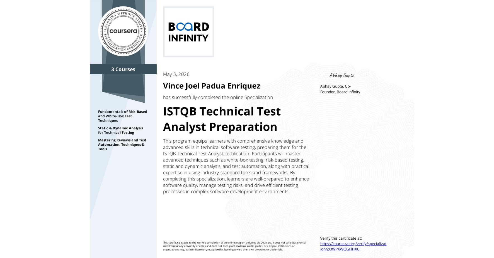
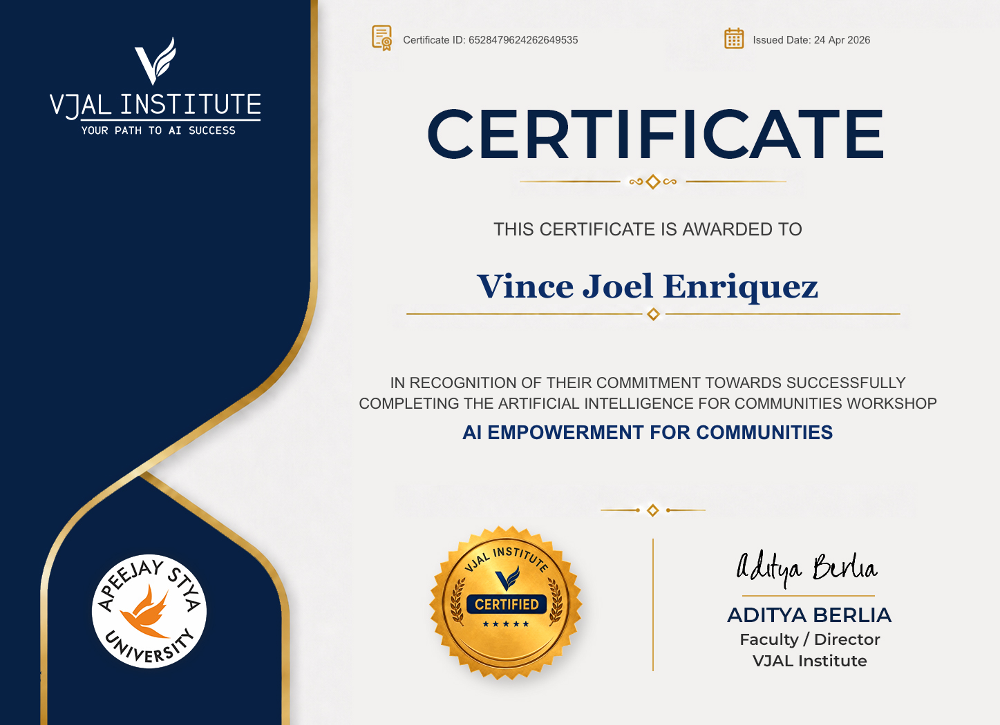
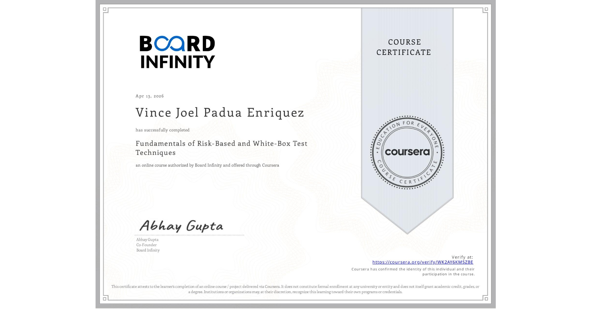
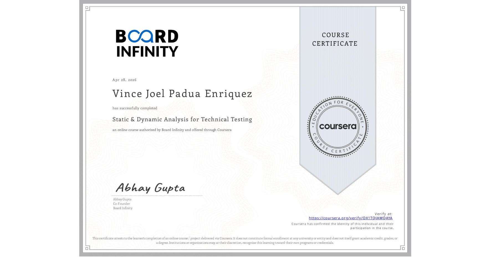

VINCE JOEL
ENRIQUEZ
Detail-oriented Quality Assurance Tester with 4 years and 6 months of hands-on experience specializing in manual end-to-end testing, User Acceptance Testing (UAT), and defect management for high-traffic e-commerce platforms. Proven track record in independently managing project testing cycles, collaborating closely with cross-functional teams, and executing thorough test suites to ensure system stability and seamless user experience.
Professional Summary
I specialize in manual end-to-end testing, User Acceptance Testing (UAT), regression testing, smoke testing, exploratory testing, and defect management for high-traffic e-commerce and government systems. I collaborate with developers, business analysts, designers, and stakeholders in Agile and Waterfall environments to ensure stable and high-quality software releases.
Core Skills
Work History
Quality Assurance Tester
Nityo Infotech
- Executed end-to-end testing for web and mobile e-commerce platforms.
- Validated order flow using SAP Hybris (SAP Commerce).
- Prepared UAT documentation and monitored testing progress.
- Take ownership on UAT project by UAC and Production Migration documentation.
- Lead a UAT project for enhancement and new feature.
- Logged and validated defects using JIRA.
Software Tester
Prime@ Technology Specialists, Inc.
- Tracked defects in Redmine and validated fixes.
- Generated test evidence across multiple testing cycles.
- Maintained Google Sheets test trackers.
- Participated in walkthroughs and testing sessions to validate functionality of web and application systems
Key Project Highlights
Shopify → SAP Hybris Migration
End-to-end testing of browsing, cart, checkout, payment, and order management flows.
Digital Asset Management
Validated upload, approval, publishing, synchronization, and frontend display behavior.
Promotion Landing Page
Tested banners, coupon zones, deals, routing, and customer navigation flows.
PPSR QA & System Audit
Performed scope and regression testing for financial and authentication modules.
Verified Credentials



